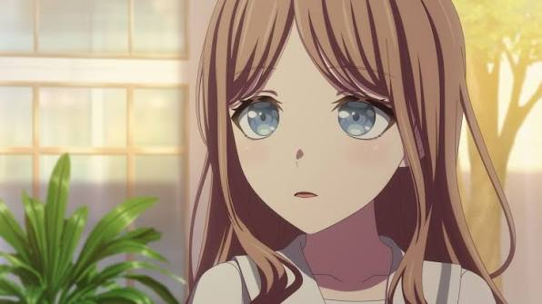

角色背景與深層心理
長崎爽世（Soyo Nagasaki）就讀於貴族學校月之森女子學園，是 MyGO!!!!! 的貝斯手。在眾人眼中，她是一位舉止優雅、待人溫和親切的大小姐。她總是面帶微笑，善於照顧他人，彷彿是樂團中負責調和氣氛的大姐姐。然而，這層完美的溫柔外表下，隱藏著極端沉重的執念與控制慾。
爽世的父母離異，這讓她對「失去歸處」有著極深的恐懼。前樂團 CRYCHIC 的解散對她造成了毀滅性的打擊。在 MyGO!!!!! 成立的初期，她的所有行動與溫柔，實際上都是為了將過去的成員（特別是祥子與睦）重新找回來，試圖復原那個早已不存在的 CRYCHIC。當她的真實意圖被揭穿，且徹底認清過去無法挽回時，她經歷了劇烈的心理崩潰。但在成員們（尤其是愛音與燈）不講理的硬拽之下，她最終放下偽裝，以最真實、甚至有些毒舌的姿態，重新接納了 MyGO!!!!! 作為她真正的歸宿。
樂團定位與音樂風格
作為貝斯手，爽世的演奏風格一如她的個性，穩重且具有包容力。她擅長在複雜的編曲中鋪陳出渾厚的低音基底，將立希焦躁的鼓聲與樂奈自由的吉他聲巧妙地縫合在一起。在完全展露本性後，她的舞台表現少了一分虛假的優雅，多了一分釋放自我後的力量感與純粹。
相關出沒資訊 (聯絡與合作洽詢)
如果您希望邀請長崎爽世參與古典樂欣賞或下午茶聚會，請參考以下資訊：
- 所屬學校： 月之森女子學園 (管樂社成員，負責低音提琴)
- 住家位置： 位於市中心的高級高層公寓
- 興趣愛好： 收集各國紅茶、欣賞古典音樂、照顧植物
- 聯絡備註： 表面上對任何邀約都會禮貌回覆，但若察覺到別有用心，可能會遭到極度冷漠的防衛性應對。